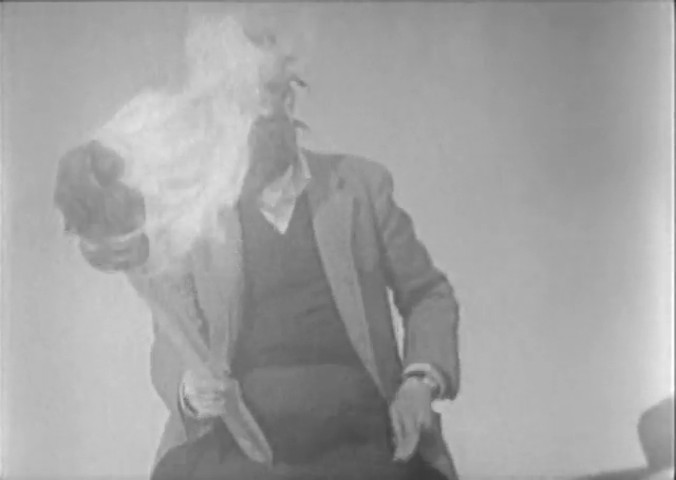

The Last Man on Earth, frame at 12:30
Sidney Salkow and Ubaldo Ragona · 1964 · Film, black and white (frame)
Free to use
Hammer Film Productions bought Richard Matheson's novel I Am Legend and Matheson wrote a script, but British censors would not allow the film, and the script was sold to the American producer Robert L. Lippert. To save money it was shot in black and white in Italy, much of it among the modern buildings of Rome's EUR district. Vincent Price and the child actress Christi Courtland were the only Americans in the cast.